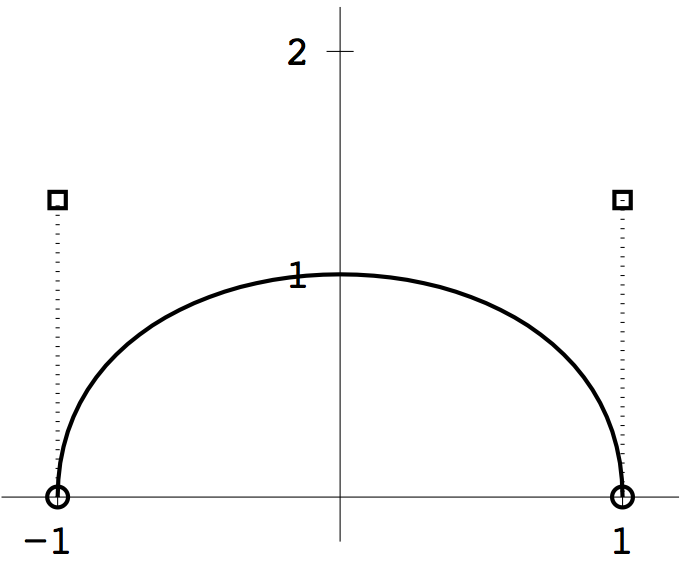
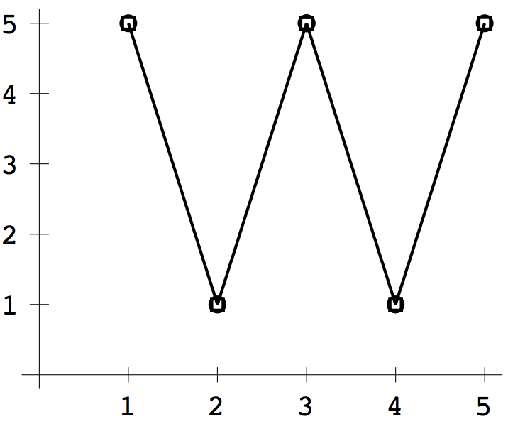
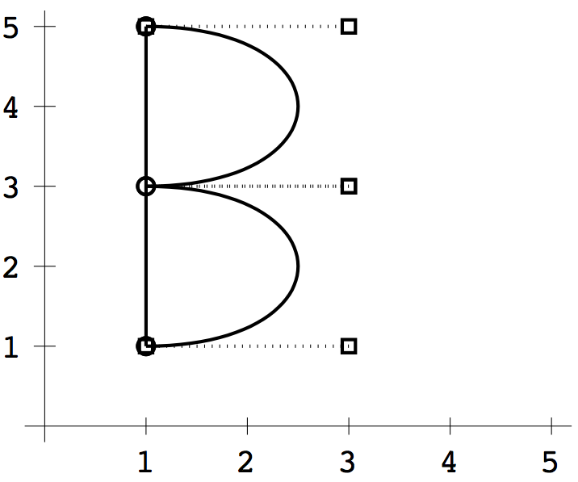
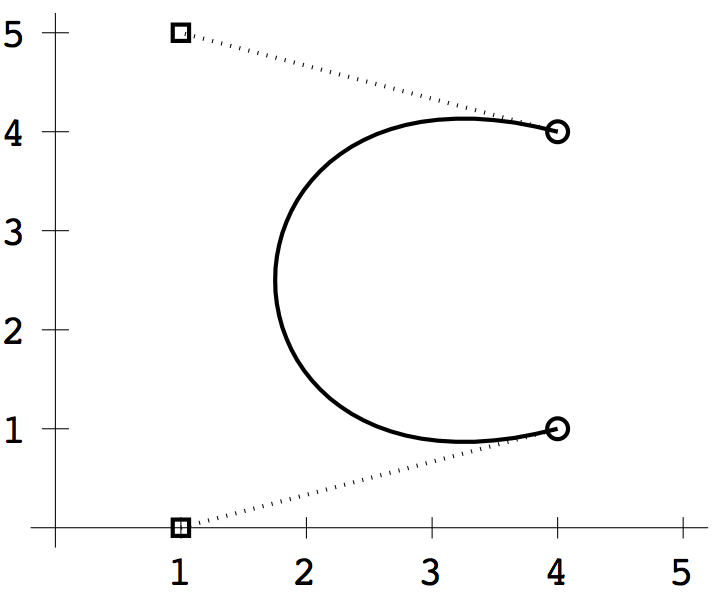
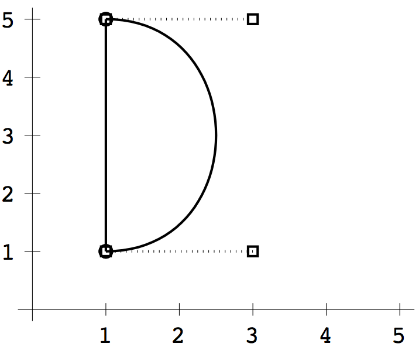

COMPUTER PROBLEMS 3.5
\(\def\ds{\displaystyle} \)
1 A Bezier spline from Exercise 7 that satisfies the requirements is
\[
\left\{ \begin{array}{ll}
x(t) = -1+6t^2-4t^3\\
y(t) = 4t-4t^2\\
\end{array}\right. .\]
A parametric plot of the spline is shown below.

3 Examples of Bezier splines for the four letters are shown.
Program 3.7 can be adapted to accept, instead of input data from
the mouse, \(n\times 4\) arrays xlist and ylist
holding rows of four \(x\) and \(y\) data points, respectively. For example,
in the second plot below we defined
>> xlist=[1 1 1 1;1 3 3 1;1 3 3 1];
>> ylist=[1 1 5 5;5 5 3 3;3 3 1 1];
to represent the three splines defined by the four point groups
\[
\begin{array}{cccc}
(1,1)&(1,1)&(1,5)&(1,5)\\
(1,5)&(3,5)&(3,3)&(1,3)\\
(1,3)&(3,3)&(3,1)&(1,1)\\
\end{array}
\]



